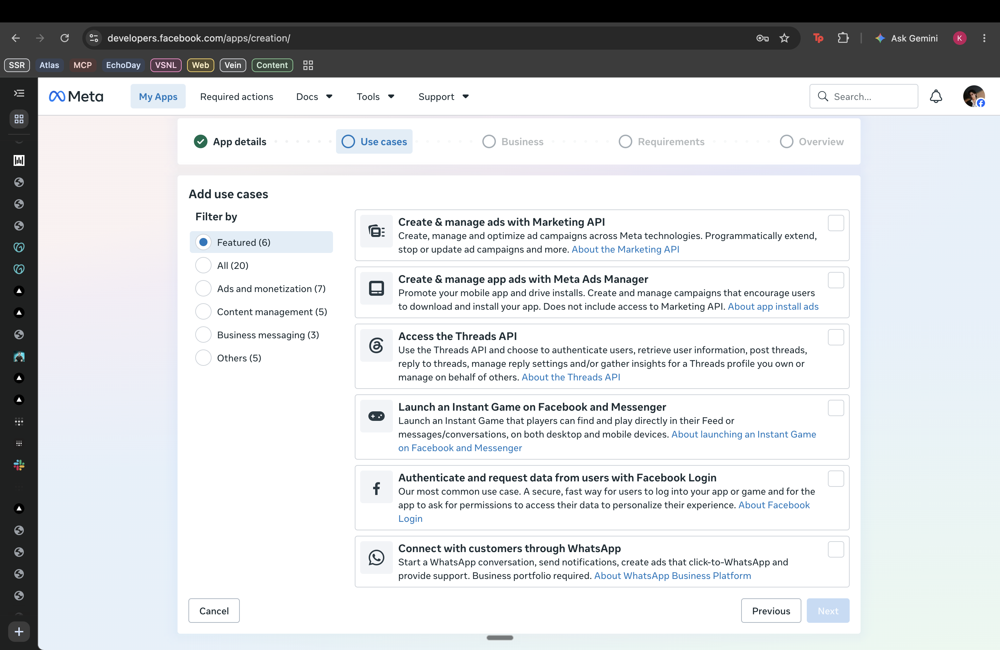
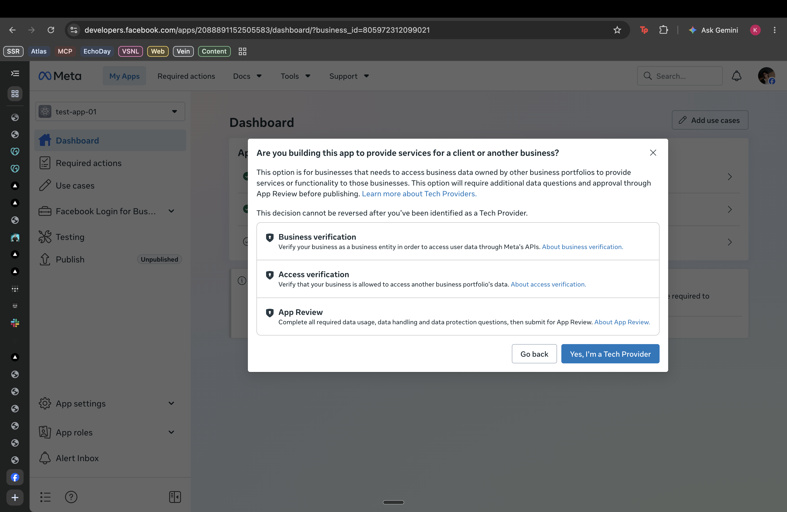
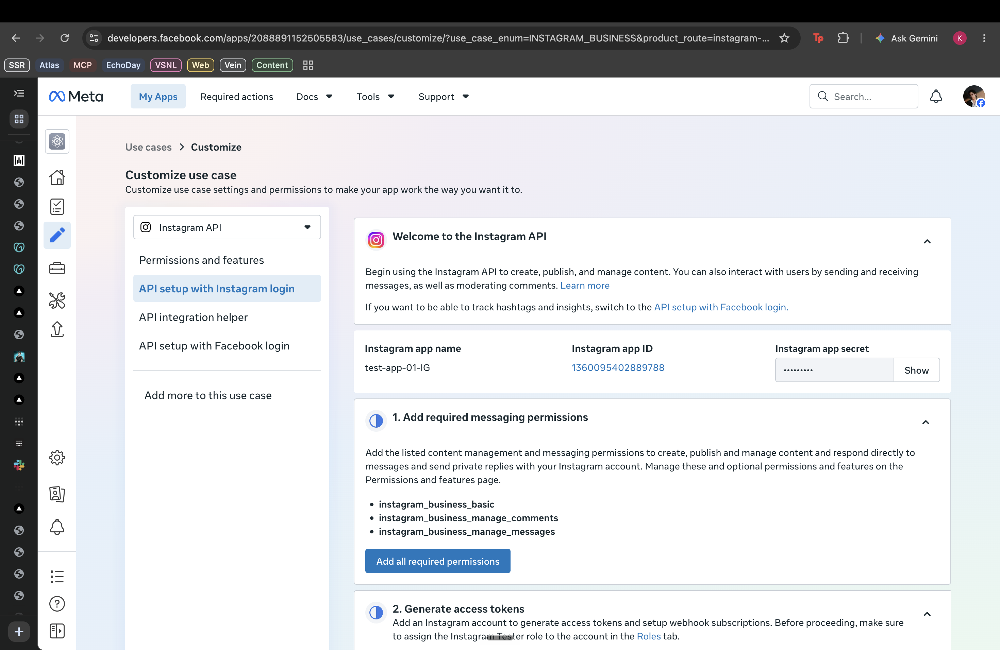
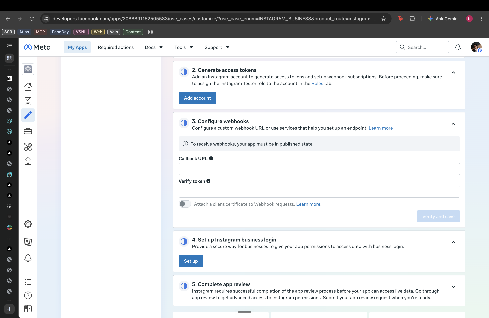
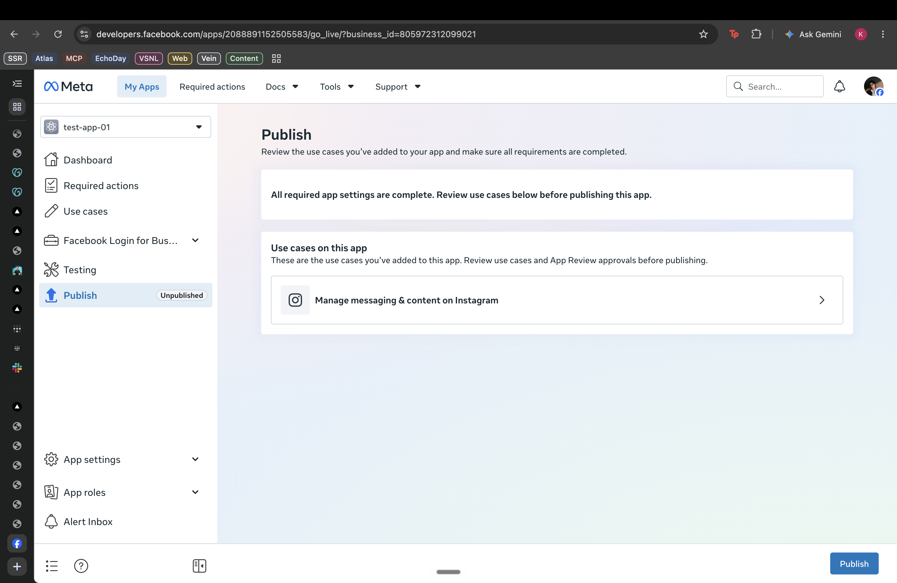

❯ visual guide · click through with → or the button
Get your Instagram token,
step by step
ค่อย ๆ ทำทีละขั้น เดี๋ยวได้ access token ของ Instagram มาแน่นอน — มีทีมงานช่วยตรงนี้
→Create a Meta app for Instagram messaging + comments
→Connect the Instagram account you own
→Generate one access token for the workshop bot
→Run a dry test before sending anything
▲Keep App Secret hidden. This workshop bot does not need it. ห้ามส่ง App Secret ให้ใคร
◆Take it slow — one screen per step. Stuck on any screen? Raise your hand, a helper will jump in. ติดตรงไหนยกมือได้เลย
❯ step 1 · create the right app
Choose Manage messaging & content on Instagram
สร้างแอปใหม่ แล้วเลือก Manage messaging & content on Instagram
screenshotCurrent Meta use-case pickerscreens/01-usecase.png

DO THIS
developers.facebook.com/apps → Create App → fill in the app details → choose Manage messaging & content on Instagram.
- Use the Facebook/Meta login connected to your Instagram.
- If Meta asks for a business portfolio, choose the one that owns your Instagram.
❯ step 2 · the one trap to avoid
Don't click "Become a Tech Provider"
อย่ากดปุ่ม Become a Tech Provider เด็ดขาด
screenshotThe Tech Provider confirmation you should cancelscreens/02-tech-provider-trap.png

WHY IT MATTERS
That path is for serving accounts owned by other businesses. It starts verification and App Review.
▲This workshop connects only the Instagram account you own with Standard Access. Close this dialog and keep going.
❯ step 3 · configure Instagram
Open API setup with Instagram login
เปิด API setup with Instagram login แล้วเพิ่ม permissions ให้ครบ
screenshotInstagram API setup and required permissionsscreens/03-instagram-api-setup.png

DO THIS
Use cases → Instagram API → API setup with Instagram login → click Add all required permissions.
instagram_business_basicinstagram_business_manage_commentsinstagram_business_manage_messages
◆The App ID shown here is not the workshop key. Leave App Secret hidden.
❯ step 4 · connect your Instagram
Add the tester role, then click Add account
เพิ่มบัญชี Instagram เป็น tester แล้วกลับมากด Add account
screenshotGenerate access tokens → Add accountscreens/04-add-account.png

DO THIS
App roles → add your IG account as an Instagram Tester if Meta asks. Accept the invite inside Instagram, then return here and click Add account.
- Your Instagram must be a Professional account (Business or Creator).
- Approve only the account you own and will use in the workshop.
❯ step 5 · copy the one value we need
Generate your access token
สร้าง access token — นี่คือ "API key" ที่ระบบใช้ทำงานแทนคุณ
privacy-safe exampleMeta reveals the token once. Copy it directly — never photograph or screen-share the raw value.IGQV••••••••••••••••••••
DO THIS
Approve the Instagram permission screen → click Generate token beside your account → copy the long token once.
Access tokenIGQV…
▲Do not photograph the raw token. Do not paste App Secret. The assistant needs only this access token.
❯ step 6 · stop unless Meta blocks you
Publish is not the default for this workshop bot
บอทในคลาสไม่ใช้ webhook — ยังไม่ต้อง Publish ถ้า Meta ไม่ได้บังคับ
screenshotPublish screen — troubleshooting onlyscreens/06-optional-publish.png

WHY
Meta requires Published state for webhooks. This student bot polls the Instagram account the student owns and does not configure webhooks.
- If token generation and dry-run work, keep going.
- If Meta explicitly blocks the own-account flow, raise your hand.
▲Do not click Tech Provider, start App Review, or invent a fake Privacy Policy URL.
❯ step 7 · handoff to the assistant
Give Claude only the access token
ส่งให้ Claude แค่ access token ค่าเดียว
DO THIS
Back in Claude, say: I have my Instagram access token. Save it locally and set up the bot.
IG_ACCESS_TOKENIGQV…
◆Claude stores it in a gitignored .env. The bot discovers IG_USER_ID automatically on first run.
❯ done · test it for real
Test it — the right way
ทดสอบให้ถูกวิธี: ให้เพื่อนคอมเมนต์ ไม่ใช่คอมเมนต์เอง
Have the person next to you comment your keyword under your post — from their account.
- You should get a public reply under the comment and an auto-DM to them.
- You can't test from your own account (own comments are skipped, and you can't DM yourself).
- The DM lands in their Requests folder if they don't follow you yet — that's normal.
✓Both the reply and the DM showed up? You're live. ขึ้นทั้งคู่ = ใช้งานได้จริงแล้ว 🎉
▲Never re-send a DM that "looks failed" — it may have already been delivered. One comment = one DM. Let the assistant handle sends.